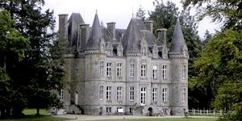
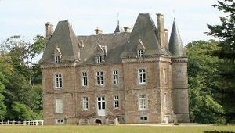
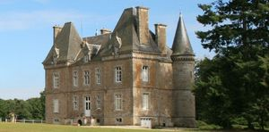

Recensement Jean-Claude Truffet
| Département | 35 — Ille-et-Vilaine |
| Canton | Val-Couesnon |
| Commune | Le Chatellier |
| Type d'édifice | Château |
| Période d'origine | XIX |
| Coordonnées GPS | 48° 25' 12" Nord, 1° 13' 59" Ouest 48° 25' 14? nord, 1° 13' 57? ouest |



VIEUVILLE Le commanditaire de ce bâtiment est Monsieur Saturnin Le Mercier des Alleux. Le château a été construit au cours du troisième quart du XIXe siècle par l'architecte Jacques Mellet, la date de 1869 a d'ailleurs été découverte sous l'enduit par les propriétaires actuels. Le fait que Jacques Mellet ait déjà travaillé dans la commune a influencé le propriétaire de la Vieuville dans le choix de cet architecte. Jacques Mellet a beaucoup oeuvré dans le département d'Ille-et-Vilaine puisqu'il a construit environ 75 bâtiments entre 1844 et 1876. Outre le projet architectural, le cabinet Mellet a également fourni les plans pour l'aménagement intérieur du château. De nombreux réemplois de l'ancien manoir situé au sud-ouest sont présents dans le château, tant pour le décor intérieur que pour des éléments d'architecture des communs sur lesquels les lucarnes sont des réemplois de l'aile ouest de l'ancien manoir, détruite au milieu du XIXe siècle. Le propriétaire actuel possède des plans d'un projet de restauration de l'ancien manoir qui sont signés de l'architecte A.Tourneux, ces plans témoignent du fait que le propriétaire de la Vieuville de l'époque, M. Des Alleux, a hésité entre la restauration de l'ancien manoir et la construction d'un château neuf. Un document d'archives de 1825 nous apprend en effet que le manoir était en assez mauvais état à cette époque et mentionne l'existence de boiseries et d'anciennes tapisseries dans le bâtiment.
VIEUVILLE, des plans d'aménagement intérieur datant de 1922 nous permettent de connaître le plan de l'édifice et la disposition des différentes pièces par niveau à cette époque. Le sous-sol était un espace réservé aux domestiques, la partie nord était composée de deux caves, séparées par une "décroterie". La partie sud du sous-sol, séparée de la partie nord par un couloir, était composée d'une chambre, d'une salle à manger des domestiques ainsi que de la cuisine, qui communiquait avec l'office du rez-de-chaussée par un monte-plats. Le rez-de-chaussée était composé au nord, d'ouest en est, d'un bureau, du vestibule d'entrée et d'un petit salon. La partie sud, donnant sur le parc, était composée, d'ouest en est, d'une chambre d'ami, de l'office, qui communiquait directement avec la salle à manger située au centre, et d'un grand salon. Le premier étage comptait cinq chambres, celles du sud possédaient des cabinets de toilette, notamment dans les deux tours circulaires. Le portail et la grille proviennent de l'ancien hôtel. Le Harivel, bâtiment datant du XVIIIe siècle, situé rue de la Pinterie à Fougères, et détruit lors des bombardements de 1944 ; ils sont protégés au titre des M.H. Le château est composé d'un édifice de plan allongé symétrique, avec un corps central cantonné de deux tours circulaires au sud et de deux pavillons saillants au nord. L'élévation comprend un niveau de sous-sol, un rez-de-chaussée surélevé, un étage carré et deux étages de comble. La façade principale (sud), construite en pierre de taille de granite, est marquée par un avant-corps central à pans coupés avec perron à deux volées d'escalier convergentes et surmonté d'un toit polygonal.
Famille de M. Des Alleux
"
a Le Chatellier le château de Vieuville GPS : 48° 25' 12" Nord, 1° 13' 59" Ouest 48° 25' 14? nord, 1° 13' 57? ouest